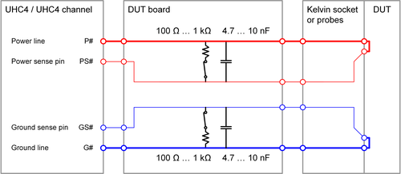

UHC4 / UHC4T recommendations for use
For safe handling of the UHC4 / UHC4T card and getting out the best performance follow the recommendations for designing the DUT board and setting up the test.
Layout recommendations
- "Fail safe" protection
- The card features a "+5V" pin that must be connected to an adequate +5 V
supply to operate the card. The pin may be used to ensure, that the DUT
board is correctly connected: No DUT board = no fire up!
For more information, refer to the +5 V pin in UHC4 / UHC4T DUT board wiring schemes.
- Sense lines
Run sense the lines to the DUT.

Kelvin sockets or separate probes for the power / force lines and the sense lines are to be used to ensure that the force and sense lines are connected directly at the DUT.
NoteAdd 100 Ω ... 1 kΩ force to sense bypass resistors on the DUT board to protect against open loop.
We recommend also, adding 4.7 … 10 nF bypass capacitors for high-frequency feedback. These capacitors are required only to minimize high-frequency noise on the sense lines.
CAUTIONThe UHC4 / UHC4T channels feature integrated sense connection test units (a.k.a. Force Sense Check or Kelvin test unit) for both the power sense pin and the ground sense pin. These units provide the only way to check the connection of the sense lines at the DUT by applying a small test current. Bypass resistors on the DUT board prevent this sense connection test.
We recommend therefore, connecting normally closed solid-state relays in series to the bypass resistors. The normally closed relays should be opened only for performing the sense connection test.
Some hints for dimensioning the bypass resistors:- The value of the bypass resistor should fit to the residual sense path resistance from the bypass resistor to the DUT.
- The value of a bypass resistor should be as close as possible to the 100 Ω but must be at least ten times bigger than the residual sense path resistance from the bypass resistor to the DUT.
- With passive copper traces and regular sockets, the resistance from the bypass resistor to the DUT will likely be in the low Ohms range, so 100 Ω for the bypass resistor will work well. Nevertheless there may be more sophisticated circuitry like switches, leading to a residual resistance of some tens of ohms in the sense path. A sense path resistance of 50 Ω leads to a minimum bypass resistor of 500 Ω to met the "ten times bigger" rule.
- Bulk- and bypass capacitors
- Keep capacitors "in range". Do not use the "if in doubt take 10x more" classic power supply
rule.
Recommended values for the capacitors are 1000 .. 2000 μF per 40 A rail.
- Capacitors types
- Use only the recommended ceramic capacitors and electrolytic capacitors. For more information, refer to UHC4 / UHC4T capacitor requirements.
Test setup recommendations
- Sense connection test
- Carefully perform the sense connection check using the on-board Kelvin test unit. The
Kelvin test unit applies a small test current to the sense lines to evaluate
the resistance from the sense path via the sense probe or the sense contact
of a Kelvin socket and via the DUT back to the force line.Note
The purpose of the Kelvin test unit is to ensure that when the DUT is contacted, the high-impedance sense line is connected to the force line at the DUT with a sufficiently low contact resistance. Due to the high input impedance of the sense line, the fixed threshold of several kilo-Ohms will be sufficiently low.
The Kelvin test unit is the only resource that can perform a reliable sense connection test with a defined test current applied.
Since connections and hardware on the DUT board can sabotage the test of the sense connections, we recommend that you check the functionality of the test without DUT and with open sense connections. All tested sense connections must fail in this verification.
Note The sense connection test cannot return a meaningful result if bypass resistors connect the force lines to the sense lines on the DUT board. We strongly recommend, connecting normally closed solid-state relays in series to the bypass resistors. The relays should be opened only for the sense connection test.SmarTest 7 only: For information regarding the sense connection check, refer to DC test method DpsConnectivity and to API HW_STATE.checkKelvinStatusParallel().
We recommend verifying the results of the sense connection with open connections at least once while the test program is debugged: No DUT must be connected for the verification and Kelvin sockets should temporarily be removed from the receptacles. The verification should ensure, that the Kelvin test unit can detect all open sense connections and is not obstructed by bypass resistors or other connections between force and sense lines.
- Maximum voltage drop on the force lines
- Monitor the force to sense voltage drop.
SmarTest 7 only: For information regarding the force to sense voltage drop, refer to parameters max_voltage_drop_force and max_voltage_drop_return in DPSPINS resources.
- Power up / down sequence
- Power up and power down sequencing and stepping needs your attention. Your device may not like reverse biasing, like one rail up, the other down!
- Current limit and current clamp settings
- In SmarTest 7, use the DC Scale limits settings and the clamp current settings with care. The nominal current settings define the DC current but the supply can handle up to 2 … 3 times the set value as surge currents!
- Slew rate control
- Use gradual ramp statements (slew rate control) with large capacitors.
- Discharging capacitors
- Use active disconnect mode for discharging capacitors.
SmarTest 7 only: For more information, refer to keyword offcurr and option act_min in DPSPINS resources.
General recommendations
- Ganging
- The UHC4 / UHC4T card nicely gangs, also across cards, as long as the gang group members
are adjacent in consecutive order. For the assignment of the channels, refer
to UHC4 / UHC4T pogo pin assignment.
If the design permits power granularities: Take advantage of it!
Most preferred solution would be a "per core supply rail", realistically the package or design may not have such flexibility, so a 16 core design may have 4 rails.
Do not gang UHC4 / UHC4T channels, unless you expect to touch 70 … 80% of the rated current. The card works well with 30 A static current and you still have lots of headroom for charge peaks.
At the same time: The maximum source/sink current per channel of 40 A per channel is a hard limit.
- Further information
- There is some more information available in the TDC that will help you
designing a DUT board for the UHC4 / UHC4T card:
- UHC4 / UHC4T capacitor requirements introduces to capacitor network design.
- UHC4 / UHC4T capacitor examples shows some typical capacitors and their measured attributes.
- UHC4 / UHC4T low-level high-current design shows some basics for correctly design the UHC4 / UHC4T connections on the DUT board and provides the UHC4 / UHC4T impedance calculation spreadsheet which spills out decoupling requirements (bulk capacitors and ceramic bypass capacitors) for a given load condition.
- Topic Layout considerations for UHC4 / UHC4T elaborates on power planes stack-up, low inductance power plane and socket design, footprint recommendations, capacitor placement and sense line routing.
- Finally, the application paper Stability of ATE supplies with different ATE test fixtures - UHC4 Stability and special features discusses the challenges of stability of high speed ATE DUT supplies.
Things to watch out
To our experience, the most commonly areas of failure which lead to problems are- too little bulk capacitance with too high equivalent series resistance (ESR).
- too much of ceramic capacitance or improper ratio of bulk and ceramics. This may lead to an oscillating UHC4/UHC4T.
- incorrect measurement of the DUT voltage by improper connection of sense lines.
- impedance of the force path on DUT board too high and consequently issues with force voltage drop. Note: An UHC4/UHC4 channel is disconnected if the force voltage drop exceeds a certain limit (default 250mV, max. programmable to 500mV).
- not using voltage ramps and experiencing too high current peaks during disconnect from discharging DUT board capacitors which may shut off the system.
- not using the act_min disconnect state (SmarTest 7 only) to ensure safe disconnection. For more information, refer to keyword offcurr in DPSPINS resources.
Functional changes
- Introduced in SmarTest 7.4.4